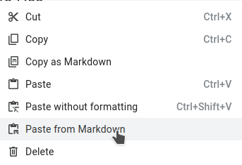
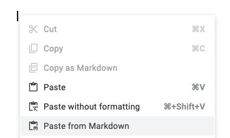

Mastering AI Chatbots: Optimizing Research through Effective Use
2024-10-29
Try out: (Re-)Writing the discussion of a given paper
Hebenstreit et al. 2024
In this study, we conducted a comprehensive comparison of zero-shot chain-of-thought (CoT) reasoning strategies across multiple large language models (LLMs) and diverse datasets. Our findings highlight that while the effectiveness of specific reasoning strategies can vary depending on the model and dataset, overall gains from CoT reasoning remain robust. Notably, GPT-4 demonstrated the most significant improvements when applying advanced reasoning prompts, particularly the “Zhou” prompt discovered through automated prompt engineering (Zhou et al., 2023b).
Effectiveness of Reasoning Strategies
Our results indicate that employing explicit reasoning prompts generally outperforms direct prompting without any specific CoT trigger. The “Zhou” prompt—“Let’s work this out in a step by step way to be sure we have the right answer.”—consistently yielded the highest performance across models, especially with GPT-4. This aligns with previous research suggesting that guiding models to think step by step enhances their ability to solve complex problems (Wei et al., 2022; Kojima et al., 2022).
Interestingly, while GPT-4 benefited significantly from externalized reasoning prompts, models like Flan-T5-xxl did not exhibit the same level of improvement. For Flan-T5-xxl, direct prompting remained among the optimal methods. This suggests that the efficacy of CoT reasoning strategies may be model-dependent, possibly due to differences in training data, architecture, or inherent reasoning capabilities.
Model Performance Across Datasets
The performance of models varied notably across different datasets. GPT-4 and GPT-3.5-turbo achieved the highest scores overall, particularly excelling in datasets like WorldTree v2 and CommonsenseQA. These datasets, which require general knowledge and logical reasoning, appear to be well-suited for advanced LLMs. The superior performance on WorldTree v2 suggests that better models find this dataset increasingly easier, potentially due to their enhanced ability to process and reason with scientific facts.
Conversely, StrategyQA presented challenges, with models showing lower performance due to the dataset’s ambiguous items. This highlights the impact of question clarity on model performance and suggests that even advanced models struggle with poorly defined problems.
The medical datasets, MedQA and MedMCQA, were the most difficult for all models. Only GPT-4 and GPT-3.5-turbo displayed acceptable performance levels, underscoring the complexity of medical knowledge and the limitations of LLMs without specialized training in this domain. The low performance of models like Flan-T5-xxl on MedQA (Krippendorff’s alpha close to chance) emphasizes the need for domain-specific fine-tuning to improve accuracy in specialized fields.
Impact of Data Contamination
(…)
Remember that for prompting o1: keep it simple, avoid chain-of-thought and use delimeters for clarity
New Prompt: Please write a concise and scientifically rigorous discussion section for my paper, maintaining consistency with my writing style demonstrated below. Respond in plain text formatted as markdown.
Here is the finished paper up to the discussion section:
’’’
[Insert your paper’s text up to the discussion section.]
’’’
This study systematically evaluated ten zero-shot chain-of-thought (CoT) prompting strategies across six instruction-tuned language models on six diverse question-answering datasets. Our findings indicate that employing specific CoT prompts significantly enhances model performance compared to direct prompting, with the “Zhou” prompt yielding the highest average Krippendorff’s alpha score when used with GPT-4 (α = .83, 95% CI [.77, .90]; Table 4).
The superior performance of GPT-4 and GPT-3.5-turbo across most datasets (Table 6) underscores the advancements in reasoning capabilities of recent large language models. GPT-4, in particular, demonstrated substantial gains from externalized reasoning prompts, suggesting that more sophisticated models can better leverage CoT strategies to improve reasoning accuracy. For instance, GPT-4’s performance increased from a Krippendorff’s alpha of .71 (95% CI [.64, .79]) with direct prompting to .83 (95% CI [.77, .90]) with the “Zhou” prompt (Table 4).
The observation that FLAN-T5-XXL exhibited unexpectedly high performance on datasets such as CommonsenseQA (α = .81, 95% CI [.75, .85]; Table 7) suggests possible data contamination due to prior exposure during instruction fine-tuning. This raises concerns about the validity of its performance on these datasets and highlights the importance of ensuring dataset integrity in evaluating model capabilities.
Our results also reveal that different prompts vary in effectiveness depending on the dataset. The “Zhou” prompt excelled on OpenBookQA (α = .74, 95% CI [.66, .81]; Table 10), whereas the “Rephrase” prompt performed better on StrategyQA (α = .42, 95% CI [.30, .55]). This variability suggests that tailoring prompts to the specific reasoning demands of a task can enhance model performance. The effectiveness of the “Rephrase” prompt on StrategyQA may be attributed to its ability to help models disentangle ambiguous questions by encouraging initial rephrasing.
The self-critique prompt, which incorporated a reflection step, did not yield the expected performance improvements and sometimes produced multiple answers, complicating evaluation. This indicates that while self-critique is a promising strategy for enhancing reasoning, its implementation in zero-shot settings may require further refinement to be effective.
Our findings emphasize the potential of carefully designed zero-shot CoT prompts in enhancing the reasoning abilities of language models. The significant performance gains observed with certain prompts suggest that prompt engineering remains a critical factor in maximizing the utility of large language models for complex reasoning tasks.
However, the study has limitations that warrant consideration. The potential data contamination in FLAN-T5-XXL’s training data complicates the interpretation of its performance, particularly on datasets it may have been exposed to. Additionally, the lower performance on medical datasets like MedQA and MedMCQA (Table 5) highlights the challenges models face with specialized knowledge domains, suggesting a need for further research into domain-specific fine-tuning or prompting strategies.
Future work should focus on mitigating data contamination issues by utilizing cleaner datasets and exploring methods to detect and control for prior exposure. Furthermore, investigating the effectiveness of prompting strategies across a broader range of tasks and domains can provide deeper insights into the generalizability of CoT reasoning approaches.
In conclusion, this study demonstrates that zero-shot CoT prompting strategies can substantially improve the reasoning performance of large language models, particularly when aligned with the model’s capabilities and the task’s requirements. As language models continue to advance, leveraging sophisticated prompting techniques will be essential for unlocking their full potential in complex reasoning and decision-making tasks.
Let’s have the output in bullet points, structured in the main parts of a discussion.
Prompt: Please list the key points of your text as single-sentence bullet points, organized into the following parts of the discussion:
Return it as a markdown file, so I can easily copy it.
Conclusion
• Employing specific zero-shot chain-of-thought (CoT) prompts significantly enhances the performance of large language models compared to direct prompting.
• The “Zhou” prompt yielded the highest average Krippendorff’s alpha score with GPT-4 (α = .83, 95% CI [.77, .90]), indicating its effectiveness in improving reasoning performance.
• GPT-4 and GPT-3.5-turbo demonstrated superior performance across most datasets, highlighting advancements in recent large language models’ reasoning capabilities.
• Tailoring prompts to the specific reasoning demands of a task can enhance model performance, as different prompts vary in effectiveness depending on the dataset.
• Carefully designed zero-shot CoT prompts can substantially improve the reasoning abilities of language models, emphasizing the importance of prompt engineering.Limitations
• Potential data contamination in FLAN-T5-XXL’s training data complicates the interpretation of its performance on certain datasets.
• Lower performance on medical datasets like MedQA and MedMCQA highlights challenges models face with specialized knowledge domains.
• The self-critique prompt did not yield expected performance improvements and sometimes produced multiple answers, complicating evaluation.
• Findings may be limited by the specific models and datasets used, necessitating caution in generalizing the results.Related Work
• Builds upon previous zero-shot CoT prompting strategies by Kojima et al. (2022) and Zhou et al. (2023b).
• Relates to research on self-critique strategies in language models by Madaan et al. (2023) and Saunders et al. (2022).
• Aligns with ongoing exploration of prompt engineering as a critical factor in enhancing language model performance.Future Work
• Focus on mitigating data contamination issues by utilizing cleaner datasets and developing methods to detect and control for prior exposure.
• Investigate the effectiveness of prompting strategies across a broader range of tasks and domains to assess generalizability.
• Refine self-critique strategies in zero-shot settings to enhance their effectiveness in improving reasoning.
• Explore domain-specific fine-tuning or prompting strategies to address challenges in specialized knowledge domains.If you really want to have it as markdown use GPT-4. Tip: just change the model and continue within the chat.
Prompt: Convert this text to markdown format.
You can convert the original discussion from the paper turned into bullet points by o1-preview
Prompt:
Read the scientific paper I am giving to you. List the key points only of the section discussion as single-sentence bullet points, organized into the following parts of the discussion. Provide only the most important 3-5 bullet points per section:
Respond in plain text formatted as markdown.
Here is the finished paper including the discussion section:
““”
[full paper]
““”
Conclusion
Limitations
Related Work
Future Work
Do a side by side view to check if it captures the main points
In a paper where you need to write the discussion, you can just copy the suggested discussion in bullet point format into a Google docs and work on it.
This only works in Chrome:
 Paste text from Markdown
Easy exchange of formatted text between Google docs and Chatbot interface.
Current developments: ChatGPT already includes the option to continue working on outputs manually.
Give the bullet points of the original discussion to the Chatbot and let it write
o1: First model that writes good scientific text without specific prompting
For scientific writing other models are often not precise and concise enough.
Guide them to have a specific writing style by giving an instruction or example texts.
Prompt GPT-4/GPT-4o (free access) with your paper up to discussion, the bullet points and the writing style instruction on the next slide.
Example of an Writing Style Guide: